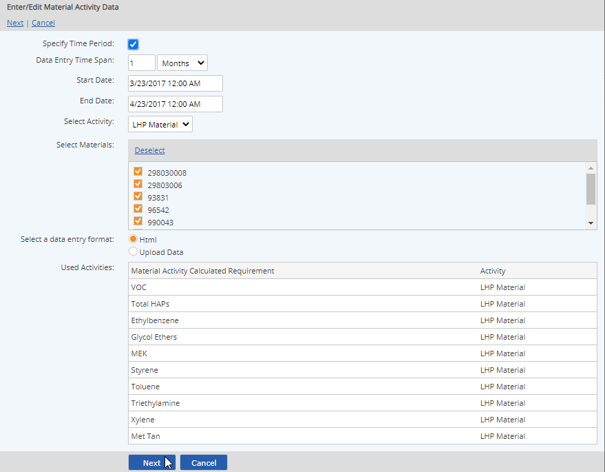
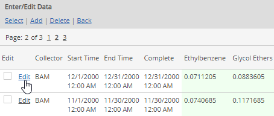
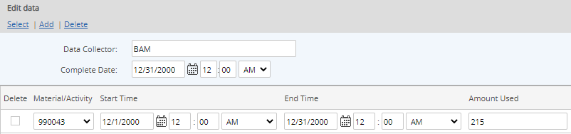

Right click and choose Data > Enter/Edit.

If different types of requirements are associated with this parent object, you must choose the requirement type.
Select Material Activity for the data type, if necessary.
On the next page, you can select the Activity and the Materials to be used in the data entry.
In most cases, the Material Activity requirements under a single parent object are associated with a single Activity. However, if more than one Activity is used, you may need to select the appropriate Activity. The Material Activity requirements and the associated Activities are listed.

Select Next.
Existing calculated data is displayed.
To delete a calculated data point, check the Delete box, then click Delete.
To edit the input values and recalculate the data:
Click the Edit link for the data line you want to edit.

The input data used in the calculations is displayed.

You can edit the data in the following ways:
Change input values for specific use variables. When your edits are saved, each the dependent data for the Material Activity Calculated Requirements will be recalculated.
Edit Start/End Time date or times.
Add new data lines. All data with the same Complete Date is treated as a single material data batch. Aggregations are performed across all data lines in a batch.
Delete one or more data rows. Check the delete box for the row(s) then select Delete to delete one or more data rows.
You cannot delete all material data lines. If you want to delete the entire material data line, delete the calculated data point on the previous screen.)
After making your edits, select Save.
A message appears, requesting that you confirm that you want to overwrite the existing data.
Select Overwrite to overwrite existing data and save your edits, or Back to review or change it.
A confirmation message appears informing you that the data entry was successfully added to the queue.